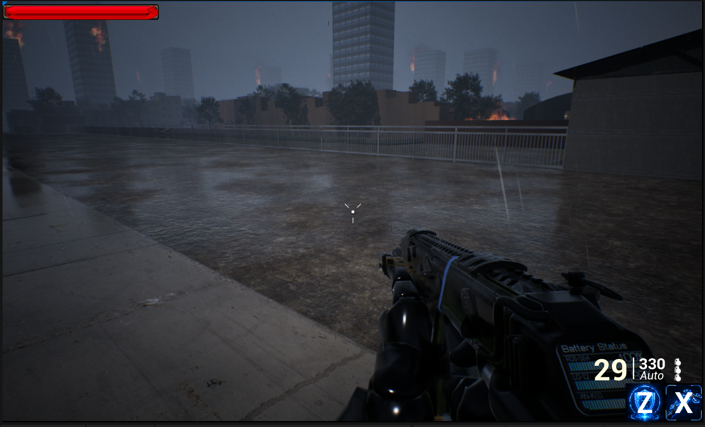
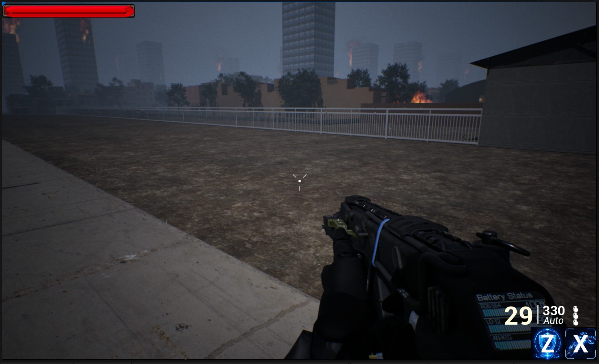
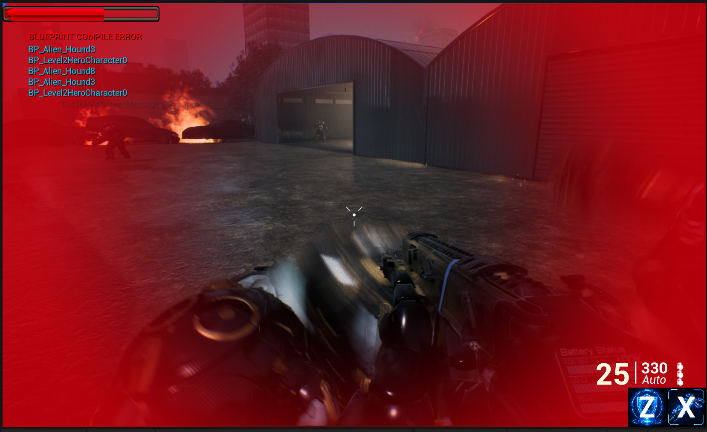
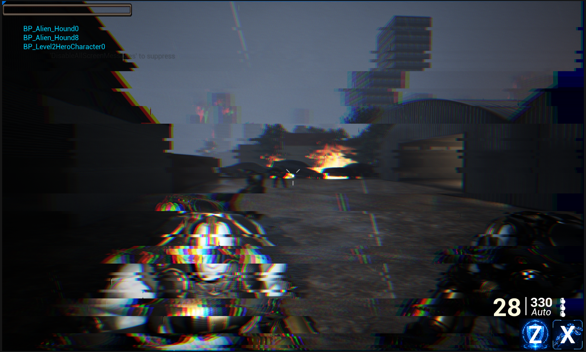
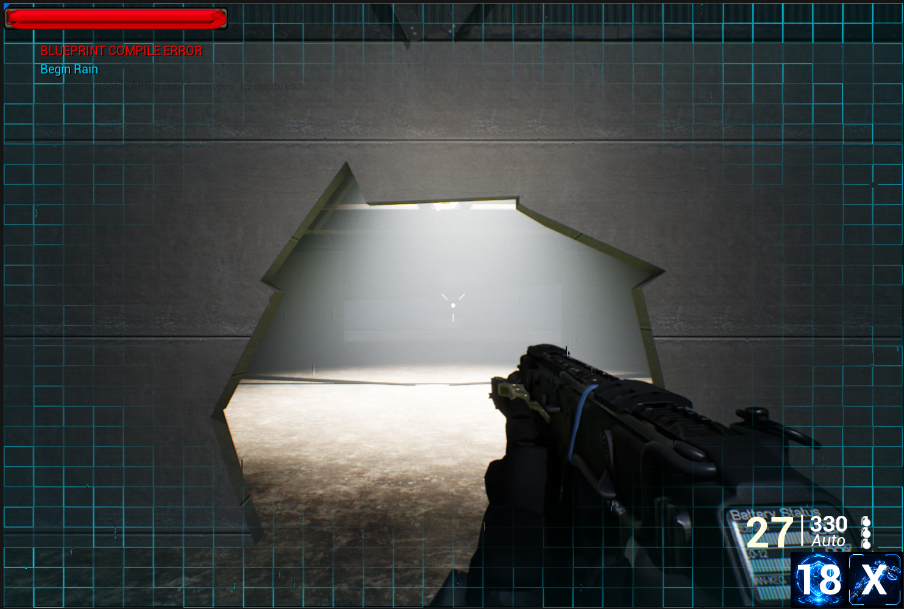
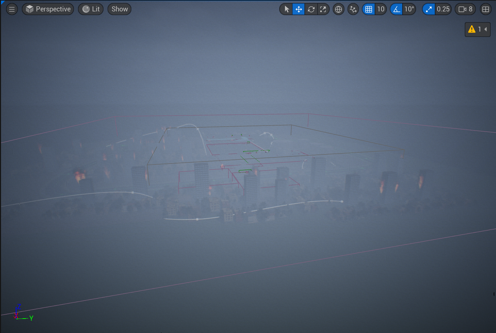
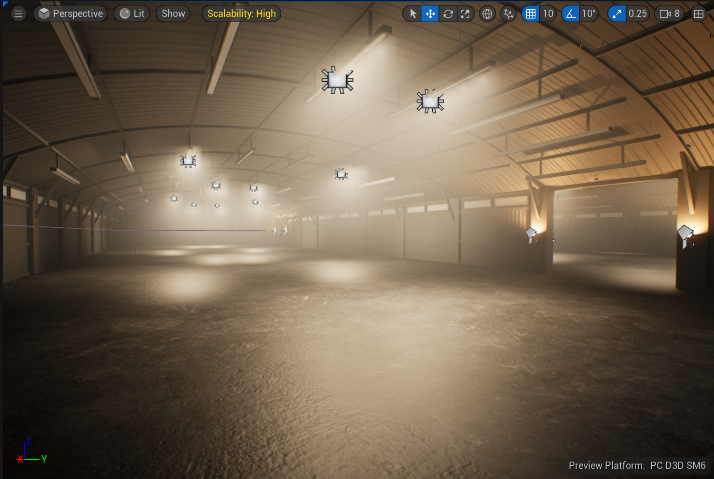

C++ · Multithreading · Intel Open Image Denoise · University of Warwick · 2026
Extended a CPU path tracer in C++ with light tracing, instant radiosity, and material models for metal, glass and layered surfaces to explore light transport and material behaviour.
Why it matters
Simulates highly realistic lighting and materials using industry-standard math and data structures, dramatically reducing render times and visual noise through spatial optimizations and Intel AI denoising.
Architecture: Three integrators in one engine: Path Tracing, Light Tracing, and Instant Radiosity (which uses a Halton quasi-Monte Carlo sampler relying on prime bases for the Radical Inverse).
Material framework: GGX microfacets (Conductor BSDF, sampled proportionally to the NDF), Plastic (Phong), Diffuse, Oren-Nayar, Glass, Mirror, and a Layered BSDF evaluating Beer's Law for attenuation.
Performance: Rendering distributed across CPU threads in 32 × 32 tiles, with a Binned SAH BVH (surface area heuristic bounding volume hierarchy) to reduce geometry searches and Multiple Importance Sampling (MIS) for latitude-longitude environment maps.
Denoising: Integrated Intel Open Image Denoise using colour, albedo and normal buffers, producing denoised images at 16 samples per pixel across four test scenes.
C++MultithreadingBVHMISPBR MathIntel OIDN
128 spp reference16 spp + OIDN
Drag to compare a 128 spp reference with a 16 spp render denoised by Intel OIDN. Focus the comparison and use the arrow keys to adjust it.
Path TracingLight Tracing
Comparing integrators in the Cornell Box: Path Tracing, Light Tracing, and Instant Radiosity.
Materials test: GGX conductor, Plastic, Oren-Nayar, Glass, and Mirror BSDFs.002
C++ · SIMD · Multithreading · University of Warwick · 2026
Optimised a supplied CPU rasterizer by profiling bottlenecks, applying SIMD instructions, and caching transformed vertices to avoid repeated calculations. Sequential optimisations cut mean execution time by 49.3%: the 1,600-object benchmark scene fell from 86.4 s to 43.8 s across 10 runs on an Intel Core Ultra 7 155H. I also evaluated a thread pool across three test scenes to investigate CPU scaling.
Hardware profiling · the "thread plateau"
I profiled how performance scales with thread count on my Intel Core Ultra 7 155H. In the Scene 3 results below, speedup peaks at roughly 2.8× around 6 threads, then degrades. This thread-scaling experiment is separate from the sequential optimisation benchmark above; thread count alone does not establish the cause of the plateau.
Individual game · Unreal Engine 5 · C++ / HLSL / Blueprints · University of Warwick · 2026
A stealth-horror game whose core mechanic is a denoiser. Enemies are signed distance fields sphere-traced in HLSL and hidden under visual noise. Holding still lets the image resolve and reveals where they are, but holding still is also what lets them close the distance.
Why it matters
It began as a critical literature review of SDF rendering and denoising, and the research became the design rather than a footnote to it. Sample convergence is normally invisible plumbing; here the convergence rate is the risk/reward curve the player is reading. Same territory as the Intel OIDN work in 001, turned into a mechanic instead of a post-process.
Enemy rendering: enemies are signed distance fields sphere-traced in an HLSL shader, each with independently configurable appearance parameters, so a new silhouette is authored as SDF parameters rather than as a mesh.
The mechanic: screen-space noise resolves while the player holds still, tying denoise convergence directly to enemy visibility and to how much ground the enemy gains while you wait.
AI: enemy vision, pursuit and retreat written in C++, with debug draw visualization used to verify detection state during development.
Iteration: built in the open with fortnightly demos to staff and peers. Movement speeds were retuned and a tutorial added directly off the back of playtest feedback.
Unreal Engine 5C++HLSLSDF Sphere TracingDenoisingGame AI
The noise clears while the player holds still, and the enemy closes the distance.004
Skyfire Uprising · Level 2
Team game · Unreal Engine 5.4 · Tech Art & Group Lead · University of Warwick · 2026
Led a six-person group responsible for Level 2 within a 42-person international team split across seven level teams. I coordinated the group's work and kept the level consistent with the shared art direction while developing its weather, materials, lighting, and damage-feedback post-process stack.
Shipping inside a 42-person studio
Seven groups each owned a level against one shared art direction, so anything I wrote had to survive other people's hands. Every material exposed its parameters upward, letting teammates tune rain intensity, wetness and fog against their own set dressing without opening a shader graph or coming back to me.
Weather & materials: Gerstner wave water, a Niagara rain system with splashes and puddle accumulation, and a reusable wetness layer that darkens albedo and drops roughness across the level's surfaces.
Lighting & atmosphere: volumetric fog tuned across the whole level footprint, and interior lighting passes for the warehouse spaces the level routes players through.
Damage feedback: a full post-process state stack — a red screen-space response on taking damage, a chromatic-aberration and slice-displacement glitch on death, and a grid overlay marking respawn invulnerability.
Performance: Cull Distance Volumes used to scale the level's draw load across a large outdoor footprint.
Unreal Engine 5.4HLSLNiagaraPost-ProcessingVolumetric FogTeam Lead


Dry base materialsRain + wetness layer
Drag to compare: the wetness layer darkens albedo and drops roughness, so the rain system has something to read against.

Taking damage

Death

Invulnerable
One post-process stack, three readable player states: hit, dead, and briefly invulnerable after respawn.

Volumetric fog · level footprint

Warehouse interior lighting
Fog tuned across the full level footprint, and the interior lighting pass for the warehouses.005
An engine built entirely from scratch to deeply understand the math behind graphics APIs. Instead of using existing math libraries (like GLM), I wrote the matrix, vector, and homogeneous-coordinate mathematics myself. Implements the full Model-View-Projection (MVP) chain, perspective-correct interpolation, depth buffering (Z-buffer), and Lambertian lighting, parsing .gem meshes to render pixel-perfect geometry.
C++3D MathMVP PipelineZ-buffer
Lambertian ShadedWireframe / Geometry
Stanford bunny parsed from a .gem mesh: Drag to compare shaded rendering vs. raw geometry.006
Built a framework to load and display 3D models, using GPU instancing to draw repeated instances of each mesh in a single draw call. Camera controls, surface mapping and animated grass support interactive scene exploration.
From CPU rendering to DirectX 12
Working with an explicit GPU API brought together resource binding, memory management and synchronisation. I used RenderDoc to inspect the framework's rendering.
Framework features: GPU instancing, camera controls, normal mapping, parallax occlusion mapping and animated grass.
Further development (WIP): my separate DX12 Engine re-architects this framework, with ongoing work on Descriptor Heaps, Root Signatures and Pipeline State Objects (PSOs).
C++HLSLDirectX 12GPU InstancingRenderDoc
Render from the DirectX 12 framework. The separate DX12 Engine re-architecture remains a work in progress.007
A proving ground for light-transport math based on the Ray Tracing in One Weekend (Shirley et al., 2025) architecture. I extended the base engine with Motion Blur and a custom Bounding Volume Hierarchy (BVH) to drastically reduce spatial-intersection costs. The per-pixel render loop and the BVH build (sorting was parallelized via C++17's std::execution::par) are both parallelized to maximize CPU utilization.
C++Ray TracingMotion BlurBVH Acceleration
Integrated motion blur.
+
Also Built
C++ · Networking · University of Warwick · 2026
Client-Server Chat Application
A multiuser desktop chat application built with C++, multithreading and WinSock. The server handles username validation, public broadcasts and private message routing, connected to a Dear ImGui client interface and FMOD audio notifications. Source
Python · Team Graduation Project · IEEE SIU 2025 · Isik University
Face Recognition for Authentication
Co-developed an authentication prototype using Python, OpenCV, FaceNet, Flask and PostgreSQL, with face matching, a staff dashboard, access permissions and two-factor authentication. Selected for the IEEE SIU 2025 Undergraduate Projects Competition and presented as a poster.
02
About
I'm a C++ software engineer working across graphics, gameplay and systems, based in Leamington Spa, UK. I graduated in Software Engineering from Isik University in July 2025 and am completing an MSc in Games Engineering at WMG, University of Warwick (September 2025–September 2026). I spend most of my time on real-time rendering and computer graphics: writing renderers, reading papers, and figuring out why the image looks wrong. I play video games too (shocking, I know 🎮), and I'm aiming to specialize as a Graphics Programmer.
My MSc dissertation is Path Guiding in Primary Sample Space via BSDF Inversion, supervised by Dr. Thomas Bashford-Rogers. My literature review of signed distance field rendering and denoising also informed the core mechanic and renderer of Frontrooms.


 128 spp reference
16 spp + OIDN
128 spp reference
16 spp + OIDN

 Path Tracing
Light Tracing
Path Tracing
Light Tracing